Guide Utilisateur Exhaustif
Manuel complet d'utilisation de la Plateforme de Gestion des Heures Pédagogiques - Université Virtuelle de Côte d'Ivoire
1. Introduction
Bienvenue sur le guide d'utilisation exhaustif de la plateforme GestionHeures UVCI. Ce système a été mis en place pour automatiser, fiabiliser et simplifier le suivi des activités pédagogiques des enseignants de l'Université Virtuelle de Côte d'Ivoire.
La plateforme propose une expérience personnalisée avec trois profils distincts, disposant chacun de fonctionnalités spécifiques :
- Administrateur : Configuration globale, gestion des utilisateurs, des cours et extraction comptable.
- Secrétaire : Saisie des activités, processus de validation, et suivi de l'atteinte des seuils par les enseignants.
- Enseignant : Consultation du tableau de bord personnel, historique des activités, profil et téléchargement des récapitulatifs (PDF/Excel).
2. Authentification et Accès
L'accès à la plateforme est strictement réservé au personnel autorisé de l'UVCI via une interface sécurisée.
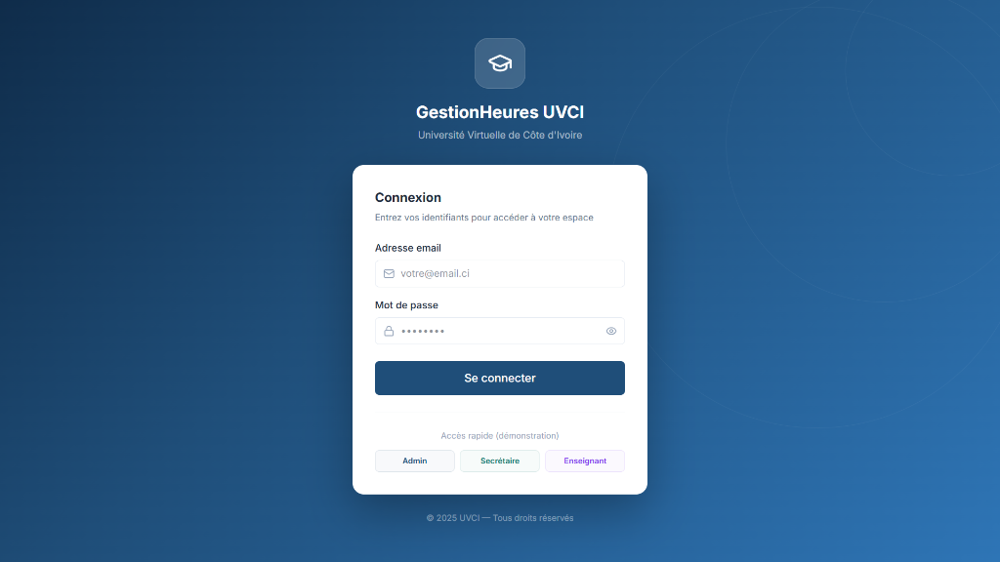
https://projet-uvci.vercel.app/login
- Saisissez votre adresse email institutionnelle (ex: prenom.nom@uvci.edu.ci).
- Saisissez votre mot de passe sécurisé.
- Cliquez sur le bouton de connexion. Le système détectera automatiquement votre rôle.
3. Fonctionnalités de l'Administrateur
L'administrateur dispose des droits les plus élevés sur le système. Il supervise l'ensemble des opérations et assure la configuration de la plateforme.
3.1. Le Tableau de bord global
À la connexion, l'administrateur accède à une vue d'ensemble complète : nombre d'enseignants, volume horaire mensuel, activités en attente et répartition par département.
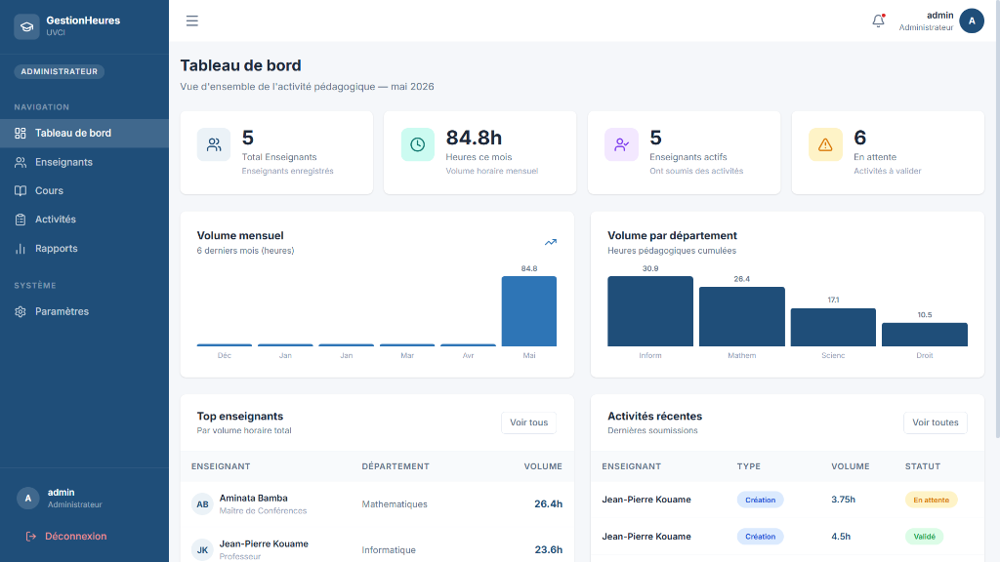
3.2. Gestion du Catalogue des Cours
L'administrateur maintient la base de données des Unités d'Enseignement (UE). Il peut ajouter de nouveaux cours, définir les filières, les niveaux et les crédits associés.
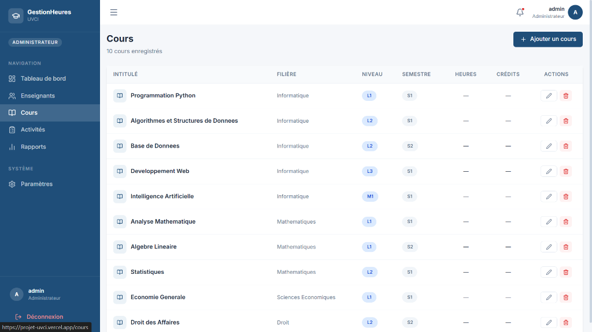
3.3. Supervision des Activités
L'administrateur peut visualiser et saisir des activités pédagogiques, avec un historique en temps réel des dernières soumissions et de leur statut (Validé, En attente).
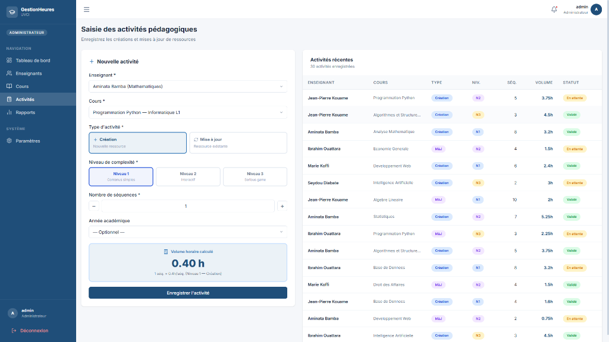
4. Fonctionnalités du Secrétariat
Le secrétariat principal gère l'opérationnel : enregistrement des séquences, validation des activités et analyse des seuils.
4.1. Tableau de bord Secrétariat & Validation
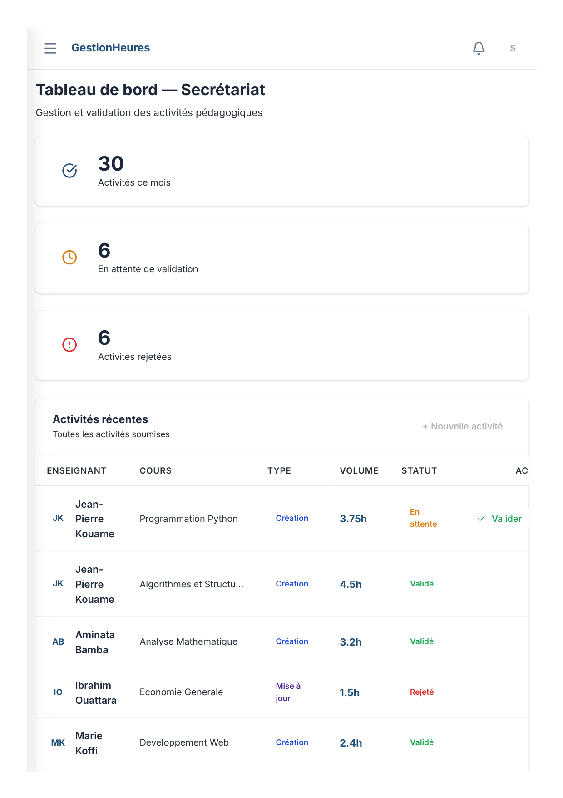
4.2. Liste et Suivi des Enseignants
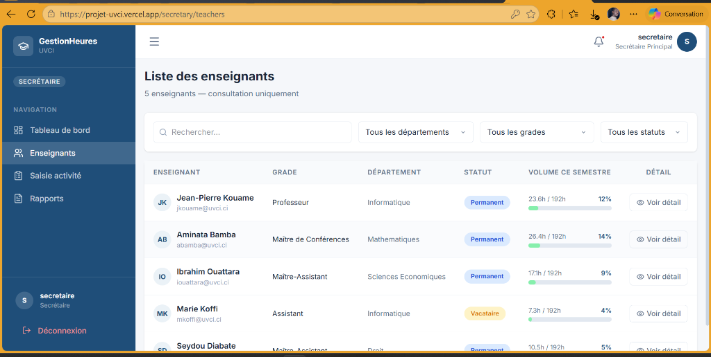
4.3. Consultation des Rapports
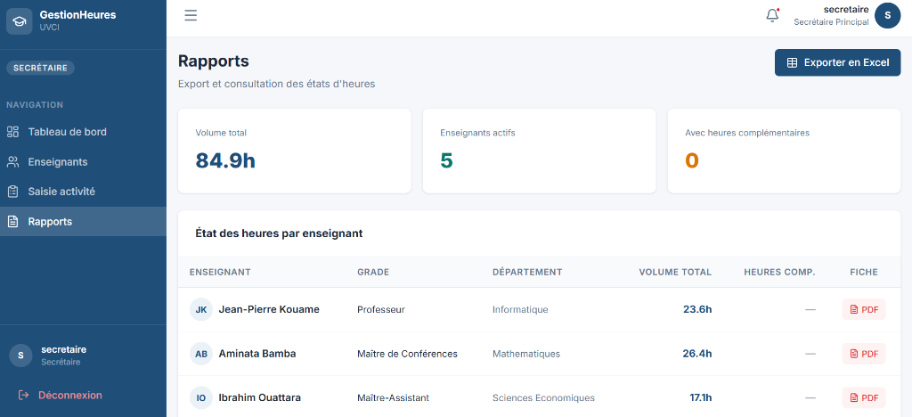
5. Fonctionnalités de l'Enseignant
L'espace enseignant offre une transparence totale sur les heures effectuées et le statut des activités.
5.1. Mon Tableau de bord
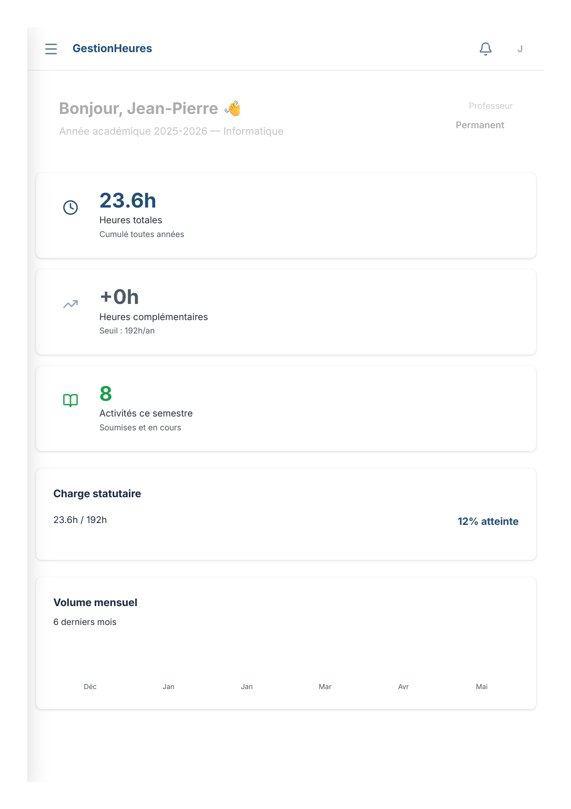
5.2. Mes Activités
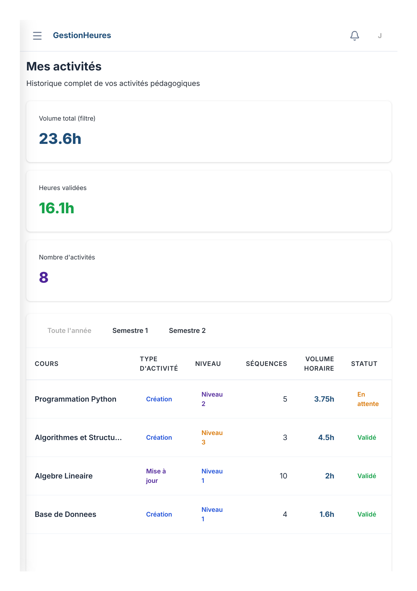
5.3. Mon Profil Contractuel
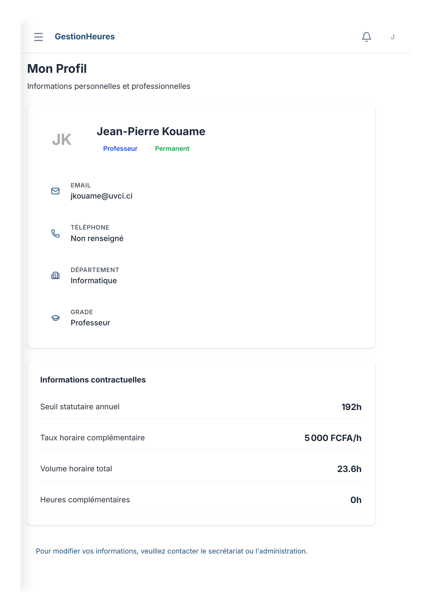
5.4. Récapitulatif et Téléchargement
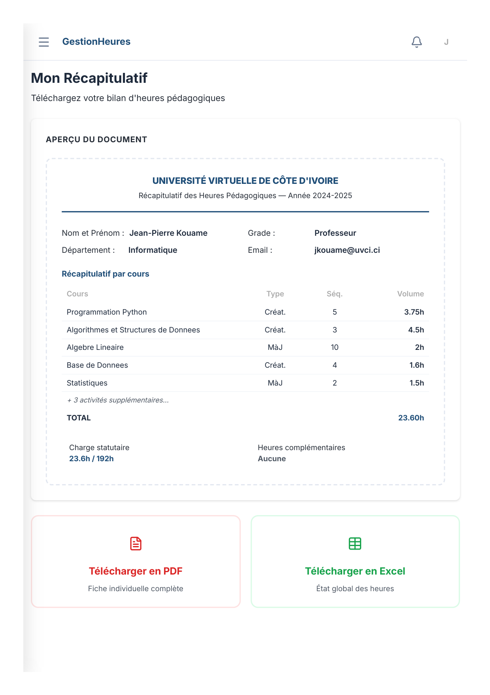
6. Annexe : Règles de Calcul et Seuils
Le système intègre un moteur de calcul basé sur la matrice officielle de l'UVCI pour garantir l'équité.
Calcul du Volume Horaire d'une activité
| Niveau de Complexité | Volume Horaire Base (pour 20 séquences) | Formule de calcul dynamique |
|---|---|---|
| Niveau 1 (N1) | 16 Heures | (16h / 20) × Nombre de séquences saisies |
| Niveau 2 (N2) | 30 Heures | (30h / 20) × Nombre de séquences saisies |
| Niveau 3 (N3) | 60 Heures | (60h / 20) × Nombre de séquences saisies |